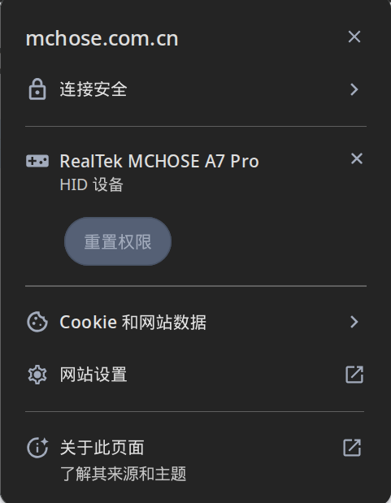

现如今，部分鼠标，键盘等硬件提供商为了更加方便多端用户配置（如 迈从），提供了网页驱动。但由于Linux较为严格的权限机制，不进行配置我们并不能直接使用，此篇将通过配置udev规则以实现网页驱动的访问
# 浏览器支持
截至到 2025月08月10日 ,支持 WebHID 的浏览器有Chrome、Edge、Opera等。FireFox当前并不支持 WebHID 据说是已经有支持的打算了
在使用网页驱动之前，需授权网站HID访问权限，如图所示

# Udev规则配置
# 获取鼠标设备相关信息
首先，我们通过命令获取鼠标
lsusb
###其输出结果如下
....
Bus 003 Device 002: ID 5253:1021 RealTek MCHOSE A7 Pro
....如果该命令不可用，请安装 usbutils 包
其中 5353 为我们设备的 idVendor,1021 为我们设备的 idProduct
# 配置udev规则
udev 规则位于目录/etc/udev/rules.d下，文件后缀为.rules
# /etc/udev/rules.d/99-custom-udev.rules
# 为一个用户组配置访问权限
SUBSYSTEM=="hidraw", ATTRS{idVendor}=="5353", ATTRS{idProduct}=="1021", MODE="0660", GROUP="webhid"在上述配置中，我们指定了特定用户组webhid,我们也可以直接指定所有者，这样就不需要建立额外的用户组
# 设置设备文件所有者
SUBSYSTEM=="hidraw", ATTRS{idVendor}=="046d", ATTRS{idProduct}=="c539", MODE="0660", OWNER="username"# 将用户加入用户组
如果我们是通过第一种方式配置则需要将用户加入所配置的用户组，这样的好处是，对于其他用户无需额外的udev配置，即可通过用户组访问设备
使用第二种方法则无需此步
sudo groupadd webhid
sudo usermod -aG webhid $USER重启或者注销当前用户以使用户组生效
# 重载规则
执行如下命令,或者重启以重载udev规则
sudo udevadm control --reload-rules
sudo udevadm trigger这样我们重新插拔相应设备即可通过网页驱动配置我们的设备
# 参考资料
更多内容可参考
Connect a website to a USB, Serial, or HID device
将网站连接到 USB、串行或 HID 设备
udev-ArchWiki
ArchLinux Wiki
Writing udev rules
Writing udev rules